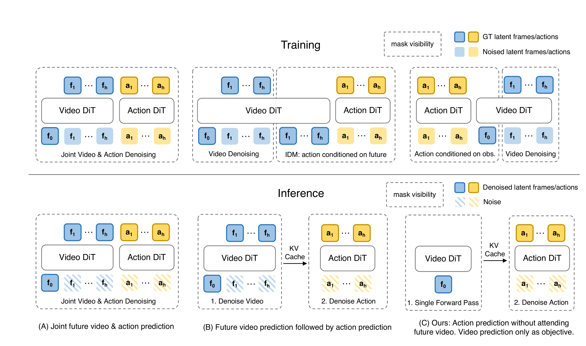

人体数据到 WAM：先让每一层说同一种语言
人体轨迹像机器人，不等于机器人能跟上；机器人能跟上，不等于动作标签与在线控制器一致；训练样本一致，也不保证 WAM 的未来预测能改善闭环控制。六篇分别补这几道缺口，不能用一个总成功率替代逐层验证。
| 阅读页 / 版本 | 只带一个问题进去 | 读完应能说清 |
|---|---|---|
| 01 GMR 2510.02252v1 · 9 页 | 为什么 RL 无法自动修复坏参考？ | 尺度与坐标先于 IK 权重；运动学可达不同于动力学可跟踪。 |
| 02 SONIC 2511.07820v3 · 37 页 | 64 维 token 到底怎么变成全身动作？ | token 与本体状态一起输入闭环 decoder；encoder、controller、checkpoint 成套。 |
| 03 EgoHumanoid-V2 2609.37181v1 · 24 页 | 为什么几何 IK 对齐之后还要 controller replay？ | 修正真实 controller 执行出来的偏差，不能把离线腕误差当任务成功率。 |
| 04 KODA 2610.21152v1 · 33 页 | 同一人类示范如何服务两个 controller？ | canonical record 固定形态；状态—动作标签依然必须按 controller 重编译。 |
| 05 Fast-WAM 2603.16666v2 · 13 页 | 视频生成的价值在训练还是推理？ | 训练保留视频损失，但动作从来不读取未来视频；推理删除未来分支。 |
| 06 VPP2 2610.10270v2 · 21 页 | 怎样让未来预测值得保留？ | 事件训练、时间对齐与蒸馏；动作确实读取未来视频特征。 |
固定版本与原图出处：来源清单。外部补充视频未逐条审计；本文不声称这些是目前最新 arXiv 修订。
1. 四个接口契约，比模型名更重要
全链路一旦失败，只有知道每一层输入输出的语义，才能判断是感知错、参考错、控制错还是策略错。
| 接口 | 传递什么 | 必须固定 | 常见假象 |
|---|---|---|---|
| 人体 → 机器人参考 | 关键体目标、浮动基与关节轨迹 | 长度单位、坐标系、四元数顺序、骨长尺度、手脚原点、时间戳 | 低位置误差可能伴随关节突跳、穿地、不可执行接触。 |
| 参考 → controller 标签 | SONIC latent 或 HEFT joint/pelvis command | 编码器窗口、token 归一化、checkpoint、动作时域 | 同为 64 维并不意味着两版 token 可以互换。 |
| 标签 → 策略样本 | RGB、proprioception、指令、action chunk | 观测与执行延迟、图像视角、手部标签来源、padding/mask | canonical 图像与 controller rollout 运动不完全一致。 |
| 策略 → 在线控制 | 目标 token / joints、手动作和有效时间区间 | 控制频率、chunk 丢弃前缀、限幅、安全检查与状态估计 | 策略推理 Hz 不等于关节控制 Hz；低延迟也不等于平滑。 |
SONIC 的关键点：control decoder 使用运动 token 和真实本体历史输出 29 个关节目标，再交给底层控制。它不是把高层 token 解码成一条与机器人当前状态无关的固定轨迹。Motion decoder 的重建用途也不能与 control decoder 混为一谈。
检查理解：换了一个更强的 SONIC checkpoint，只要输入输出维数没变就能部署吗？
不能。需核对 token 空间、encoder / decoder 配对、状态归一化、关节顺序与控制频率，并重做 replay。若高层训练标签来自旧接口，可能需要重新编码与训练。维数检查只能排除形状错误。
2. EgoHumanoid-V2 与 KODA：执行一致性与数据复用是两种目标
EgoV2 追求“这条人体示范经过固定 SONIC 后仍能完成期望交互”；KODA 追求“先保留共同物理目标，再分别生成 SONIC / HEFT 可用的数据”。它们都不把几何重定向当作最后一步。
| 问题 | EgoHumanoid-V2 | KODA |
|---|---|---|
| 中间表示 | 人体轨迹初始化、运动学修正，再进行 controller-aware 动态对齐 | G1 canonical motion + robot onboard view + instruction |
| 对齐怎么闭环 | 固定 controller 的 rollout，使用局部响应模型反复修正并筛选 | 分阶段 sampled control optimization，在目标 controller 下执行验证 |
| 监督动作 | SONIC body token 64 + 双手 12 | SONIC 76；HEFT 50；不是共享一个动作头 |
| 人体画面处理 | 去除人臂与设备、补画、可选机器人手臂渲染、增强；抽屉任务有例外 | 相机视角重建与手臂合成，绑定 G1 相机几何 |
| 最强任务证据 | 4 个目标任务无目标任务机器人示范；200 条人体示范时平均进度 51.67% | 4 任务、2 controller；人类数据补齐 robot-OOD；仍用每任务每 controller 50 条机器人示范 |
| 不能据此推出 | 51.67% 完整成功；没有任何机器人先验；50 个真机任务泛化 | 零机器人数据；跨形态泛化；仅换标签就保证接触物理正确 |
实际读法：先在 EgoV2 中理解“离线参考要经过部署 controller 验证”，再读 KODA 如何把这一原则用于两套标签。不能仅比较 51.67 与 48.75：前者是任务进度，后者是特定 OOD 下的完整成功率。
3. Fast-WAM 与 VPP2：都分两段推理，第一段算的却不是同一种东西
前四篇主要处理人体到机器人动作的对应关系；后两篇讨论策略如何使用世界模型。Fast-WAM 主变体的部署也有两段：当前观测编码一次，再做动作去噪。它去掉的是未来视频生成，不是去掉视频骨干，也不是整个策略只做一次前向。这两篇不是前四篇的直接全身部署实验。
3.1 “两段式”到底在数什么？
如果指一次动作块推理里的串行计算，Fast-WAM 和 VPP2 都可以分成两段；如果指先生成未来视频、再根据未来算动作，Fast-WAM 主变体就不属于这一类。论文另有一个名为 Fast-WAM-IDM 的对照变体，才走“未来视频 → 动作”路径。不能把它和不带后缀的 Fast-WAM 混起来。

对着图读：蓝色表示视频 latent，黄色表示动作；下排斜线块是噪声，实色块是干净条件或去噪结果。f₀ 是当前帧 latent，f₁…fₕ 是未来帧 latent，a₁…aₕ 是动作序列。C 的视频侧只有 f₀，所以第一段不是生成未来；B 的视频侧还有未来噪声块，第一段才是 “Denoise Video”。C 上排保留视频预测训练目标，但动作只以当前观测为条件。图中小写 h 的下标表示序列跨度，与旧简式中随手命名的特征 h 无关。
| 计算段 | Fast-WAM 主变体 | VPP2 主线快速路径 |
|---|---|---|
| ① 视频骨干先做什么？ | 输入当前图像与指令；只保留当前帧的干净 latent tokens，视频 DiT 前向一次。不创建未来噪声 tokens，也不生成未来视频。 | 输入当前图像、指令与未来视频噪声；蒸馏后的视频 DiT 一次前向，预测未来视频 latent。 |
| 两段之间交什么？ | 当前上下文的逐层 KV cache，供动作专家重复读取。这些特征学过视频监督，但不是刚刚生成的一段未来视频。 | 包含未来预测信息的视频 KV cache，供动作专家读取。它不是把未来像素视频播放出来再重新编码。 |
| ② 动作专家再做什么？ | 从动作噪声出发，在当前上下文与语言条件下，做 10 步动作去噪，得到一个动作块。 | 从动作噪声出发，在视频 KV 与语言条件下，做 5 步动作去噪，得到一个动作块。 |
KV cache 是什么？K 是 attention 的 Key，V 是 Value；这里指把视频侧各层已经算出的注意力键和值保存下来。动作侧每轮产生自己的 Query（查询），反复读取这些缓存，不必每轮重跑同一份视频侧计算。“第一段一次”与“第二段多次”完全可以同时成立。
3.2 原来那两行公式，每个符号是什么意思？
原式 h=f(o,ℓ); a~π(a|h) 只是把整条策略压缩成“先算条件，再生成动作”，看不出缓存、循环次数或 attention mask。它还把语言条件一并吸收进了 h，而论文实际让各 token 组通过 cross-attention 读取语言。下面先解码旧符号，再用更明确的写法说明两段。
| 符号 | 中文含义与易错点 |
|---|---|
o | 当前视觉观测，例如机器人相机拍到的桌面图像。不是未来画面；这里没有擅自补入未声明的状态输入。 |
ℓ | 语言指令，例如“把红杯放到盘子上”；编码后是文本 token 序列。不是数字 1 或损失函数。 |
f、h | f 概括当前观测和语言的编码计算；h 泛指所得内部条件。Fast-WAM 图中具体接口是视频侧逐层 KV。h 不是预测未来或动作时域 H，也不一定只是一个向量。 |
a / 下文 A | 一个动作块。H 个控制时刻、每个动作 d 个数，形状为 H × d（省略 batch 轴）。Fast-WAM 设置 H=32，d 随平台变化。不是一个标量，也不是去噪步数。 |
π | 策略的条件分布；π(A|h) 读成“给定 h 时，动作块 A 的分布”。实际由动作专家和迭代采样器实现，不意味着一次前向就产出动作。 |
~、| | ~ 表示“从该分布生成一个样本”，不是约等于；| 表示“以右侧信息为条件”，不是除号。 |
p、z_future | 旧 VPP2 式中，p 泛指未来预测的条件分布；z_future 是生成的未来视频隐表示。latent 是压缩的数字表示，不必解码成 RGB，也不是真实观测到或保证发生的未来。 |
把接口写清后的教学式分解：下式 C_now 是当前上下文 KV，C_future 是含未来预测信息的视频 KV；g 概括 VPP2 的单步视频预测计算，ε_v 是视频噪声。它们是本页为解释信息流所用的名字，不是论文变量名或真实 API 名。
①
C_now = f(o, ℓ)②
A ~ π_F(A | C_now, ℓ)
① 当前上下文编码一次，保存 KV。② 给定这些条件，从动作噪声开始做 10 步去噪。原来的 h 在这里被具体化成 C_now；第二行不是“一步直出”。下标 F 仅用于区分 Fast-WAM 策略。
①
(z_future, C_future) = g(o, ℓ, ε_v)②
A ~ π_V(A | C_future, ℓ)
① 单步预测未来视频 latent，并保留视频计算中的 KV。② 动作专家读取该缓存，做 5 步动作去噪。这里把两种产物记在同一行，不是声称要在视频生成后额外解码像素、再做一次视频编码。当前观测通过视频侧条件保留；π_V 表示 VPP2 策略。
微型算例（教学自设，非论文实验）：假设一个动作块只有 3 个时刻，每个动作是平面位移 (Δx, Δy)，则 A 是 3×2=6 个数。Fast-WAM 的第二段会反复修正这整块 6 个数，共 10 轮，最后才得到 3 个时刻的动作；不是“10 轮所以输出 10 个动作”。论文实际使用 32 步动作块，不能把这个玩具尺寸代入实验成绩。
3.3 同样叫 MoT，为什么第一段的信息还会不同？
MoT（Mixture-of-Transformers）说的是视频专家和动作专家如何组织计算、通过注意力交换信息；attention mask 则决定谁能读取谁。两个模型采用相似专家结构，并不意味着动作专家看到相同信息。
Fast-WAM 在训练时就禁止动作 tokens 读取未来视频 tokens，并禁止当前帧 tokens 从未来组读取信息，避免“未来先进入当前特征，再绕路进入动作”。因此部署时可以移除未来组。VPP2 的动作条件则保留视频预测产生的未来信息。Fast-WAM 的当前表征仍可包含训练学来的动力学先验；“不显式生成未来”不等于“模型完全没有预测能力”。
也别与训练阶段混淆：Fast-WAM 从预训练 Wan 初始化，在任务数据上联合优化动作损失与视频损失，不是由上面两行公式规定“先训完 f，再单独训 π”。VPP2 的 Figure 4 才明确列出事件级继续预训练、固定时长视频后训练与蒸馏、动作专家训练三个阶段。两段推理 ≠ 两阶段训练 ≠ 先生成未来再行动。
3.4 比较配方时，哪些量仍需对齐？
| 维度 | Fast-WAM 主变体 | VPP2 主线 |
|---|---|---|
| 模型起点 | Wan2.2 5B + 约 1B 动作专家；不做额外大规模 embodied pretraining | Wan2.1 I2V 14B + 约 0.9B 动作专家；先扩大操控视频预训练 |
| 动作能看什么 | 当前 clean-frame 表征；训练时也不允许动作读取未来视频 | 先预测未来视频特征，再通过 KV 条件生成动作 |
| 未来视频的作用 | 辅助训练表征，部署删除未来 token | 训练与推理都保留未来条件；不要求像素解码给人看 |
| 快速路径 | 当前画面一次 video backbone 提取 + 10 步动作去噪 | 视频一步蒸馏 + 5 步动作去噪，约 0.12 + 0.10 s |
| 时域 | 32 步动作块、9 视频帧；VAE 时间压缩另算 | 主线机器人未来 8 s，动作块 2 s；human 阶段时间设置不同 |
| 延迟解释 | 190 ms，RTX 5090；Joint 580 ms，IDM 810 ms | 220 ms，相关报告未给出足够硬件信息作同机横比 |
核对原图与公式：Fast-WAM Figure 1(C)：两段部署 · Eq.4 与 §3.2：当前条件表征 · Figure 2：注意力 mask · VPP2 Figure 4 / §3.2：训练阶段与推理。
这两篇没有证明相反的普遍定律。Fast-WAM 在其配方中显示未来生成可以省掉；VPP2 在更强视频训练与蒸馏配方下显示保留未来有价值。要判断因果，必须固定 backbone、数据、训练预算和推理预算，再切换未来可见性。
4. 六篇的证据不在同一把尺子上
| 论文 | 仿真 / OOD | 真机 | 统计读法 |
|---|---|---|---|
| GMR | 21 条运动逐条训练；sim、sim-dr、sim2sim | 该版本未报告物理机器人闭环测试 | tracking error 看存活帧，必须同时看完成率；不是未见运动泛化。 |
| SONIC | 未见动作子类、新 take、PHUMA 数据迁移 | 123 运动序列单次试验，99.2% 为四舍五入报告；另有 VLA 操作实验 | 运动不摔倒与操作成功是不同事件；不能把一个总分推广到每种任务。 |
| EgoV2 | 对齐误差、expanded 50-task 参考集，不是 50-task 真机 benchmark | 4 任务 × 每条件 20 trials，3 段任务进度 | 51.67% 是部分完成分数；不能直接套二项分布 Wilson 成功率区间。 |
| KODA | rollout tracking 误差；robot-ID/OOD 在真机评测 | 4 任务 × 2 controller；每任务条件 20 trials | OOD 条件已由 human 数据覆盖；缺训练 seed 方差。 |
| Fast-WAM | RoboTwin Full 训练含 random；LIBERO 4 suites | R1-Lite 叠毛巾；约 60 h 任务数据 | 不把 Full 的 Random 当 Clean2Random；真机未给完整原始次数，图示近似值不补造精确成功数。 |
| VPP2 | LIBERO / PRO / OOD 与 RoboDojo；协议不同 | ALOHA 10 类零目标任务微调，见过该形态；58.5% 报告值 | 不从 5% 刻度倒推 trial 数；不同仿真集不能硬算 ID/OOD 保留率。 |
为什么“Fast-WAM 190 ms，VPP2 220 ms”不能直接宣布前者更适合部署？
还需匹配 GPU、精度、分辨率、视角数、chunk 长度、历史长度、VAE/传输是否计入、异步方式和闭环成功率。若动作块分别覆盖不同时间，同样 200 ms 也意味着不同观测滞后和可用重规划频率。
5. 落地前的最小核查清单
下面是从论文综合得到的工程建议，不是已经运行过的用户系统测试。本次未读取或修改实际训练／部署 wrapper，也没有做机器人实验。
- 固定接口版本：记录本体、controller checkpoint、encoder、关节顺序、坐标单位、动作归一化和频率。
- 选一条完整 episode：检查人类参考、重定向 FK、controller replay 与相机投影。分别统计末端、根、足部误差、速度峰值和失败阶段。
- 回放监督样本：确认观测和动作的时间对应，区分目标 command 与实际 executed state，给缺失手部/触觉维度加有效性 mask。
- 先测短程闭环：固定数据与 backbone，对比 current-only 和 future-conditioned；成功率、延迟、平滑度同时报告。
- 再测长程：记录每阶段完成、全任务成功和干预次数，避免平均进度掩盖最后一段总是失败。
6. 与 VLA / Embodied AI 的联系
这组论文把一个模糊问题“人类数据能不能训机器人”拆成了可检查的对应关系：几何参考是否正确、控制器执行是否一致、画面与标签是否同步、模型是否真正使用可泛化的信息。VLA 和 WAM 可以共享动作专家，却可能在这些环节上完全不同。
下一步最有价值的不是再换一个大模型名字，而是在固定控制接口下找出真正的瓶颈：若 replay 已失败，先修数据；若短程好而长程失败，查任务进度与历史；若未来预测漂亮而动作仍错，查动作条件和控制闭环。每一步都应有能否证它的局部证据。